Rausu
Rausu · Hokkaido
Rausu
Highlighted on the Hokkaido map.
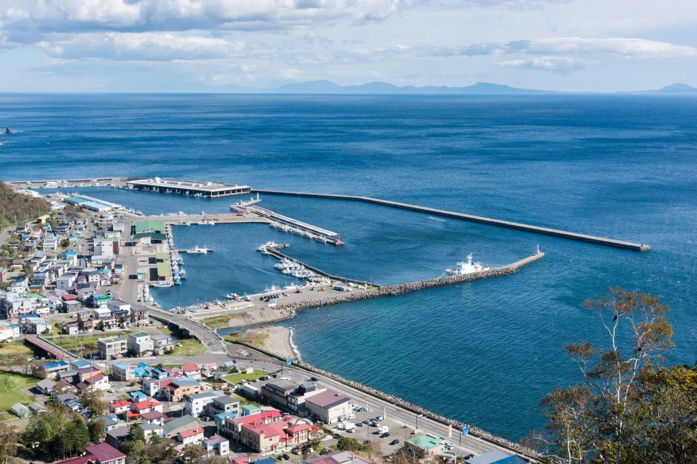
Stay
Sugi Nest Rausu -villa-
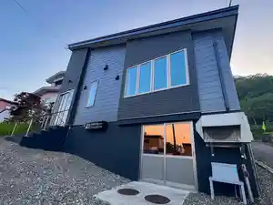
Sugi Nest Rausu -Villa
ホテル峰の湯
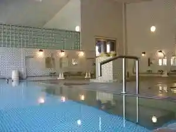
Hoteru Mine No Yu
陶灯りの宿 らうす第一ホテル
Tou Akari No Yado Rausu Daiichihoteru
らうす餐荘
Rausu San Sou
リブマックスリゾート知床シーフロント
Ribumakkusurizooto Shiretoko Shiifuronto
Dining
羅臼 旅人の宿 とおまわり
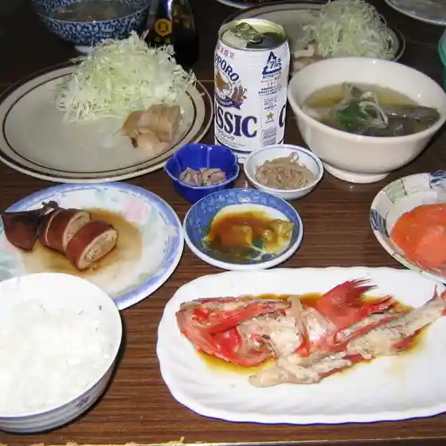
Rausu Tabibito No Yado Toomawari
正寿苑焼肉
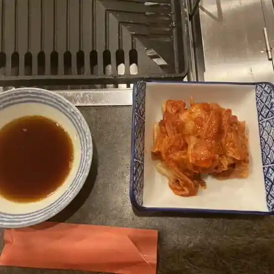
Masatoshi En Yakiniku
鳥吉
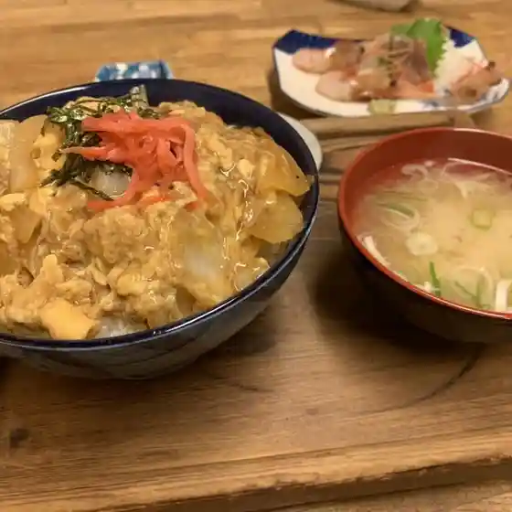
Tori Kichi
浜の漁師居酒屋 ひょう
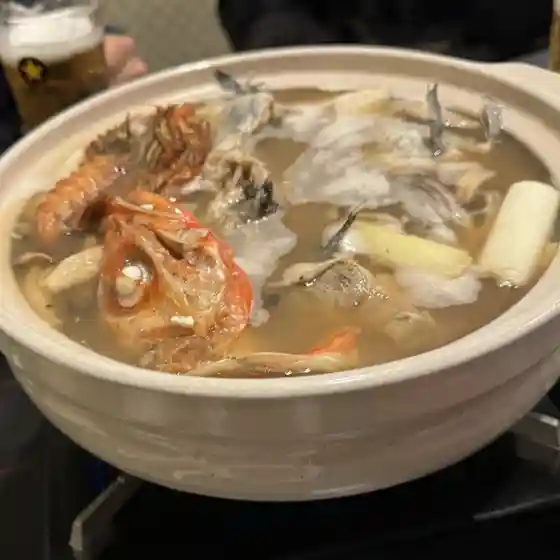
Hama No Ryoushi Izakaya Hyou
ONIGIRI LAB SHIRETOKO
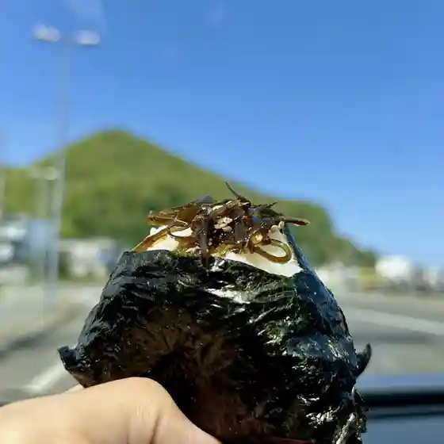
Onigiri Lab Shiretoko
知床食堂
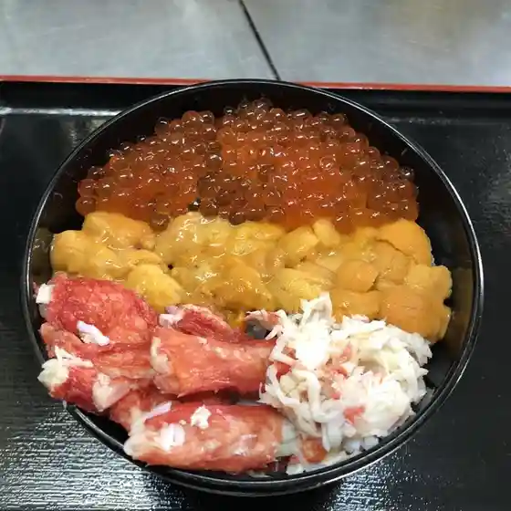
Shiretoko Shokudou
福住 羅臼店
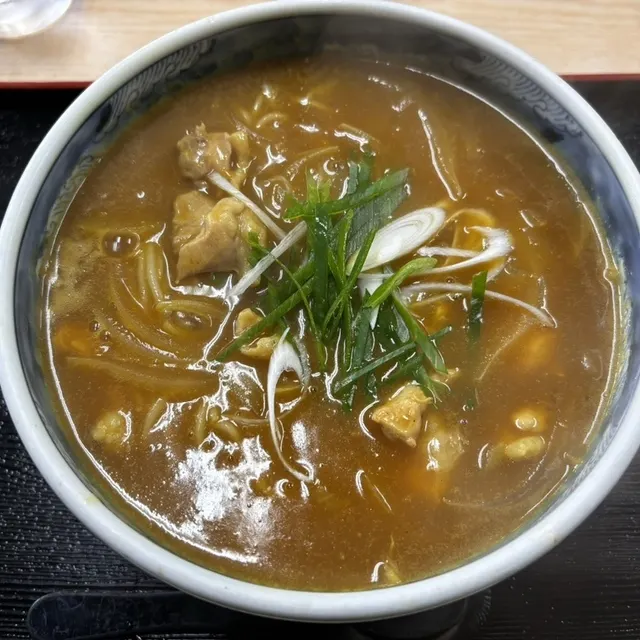
Fukuzumi Rausu Mise
羅臼漁協直営店 海鮮工房
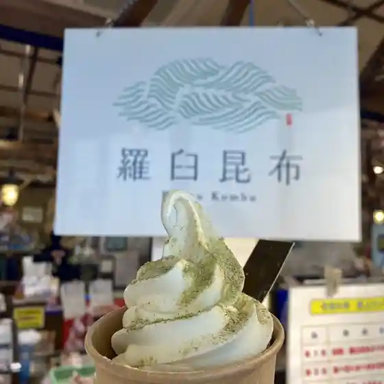
Rausu Gyokyou Chokueiten Kaisen Koubou
まるみ食堂
Marumi Shokudou
Jappina cafe
Jappina Cafe
めし処 伯亭
Meshi Tokoro Haku Tei
茶館
Sakan
プリエール
Purieeru
ホテル 栄屋
Hoteru Sakae Ya
民宿 よね丸
Minshuku Yone Maru
仕出し はちや
Shidashi Hachiya
森のカフェ テン
Mori No Kafe Ten
お食事処 もこ
O Shokuji Tokoro Moko
飲み食い処 番屋
Nomi Kui Tokoro Banya
浜っ子山ちゃん
Hamakko Yama Chan
民宿 鷲の宿
Minshuku Washi No Yado
二軒目喫茶
Niken Me Kissa
食事の店 みち子
Shokuji No Mise Michi Ko
セイコーマート 羅臼あしざき店
Seikoomaato Rausu Ashizaki Mise
Sights
Rausu Kunashiri Temboto
Rausu Kunashiri Temboto